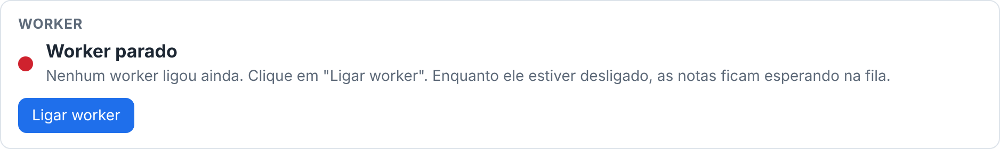
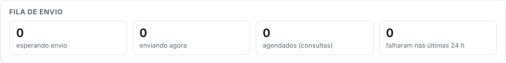

A nota ficou parada "Na fila" ou "Processando"
Normalmente a nota sai em segundos. Se ficou parada, quase sempre é o worker desligado ou a prefeitura lenta.
search Como reconhecer
- Em Minhas notas, a nota continua Na fila ou Processando por muitos minutos.
- No painel, o botão Sistema está com a bolinha vermelha ou amarela.
storefront O que o cliente faz
- Não emita de novo. A nota já está na fila: emitir outra pode gerar nota em dobro.
- Espere alguns minutos. A lista se atualiza sozinha.
- Se passar de 1 hora, avise o suporte com o número da DPS (aparece na coluna Número).
support_agent O que o suporte faz
- Abra o painel e clique em Sistema. Veja o bloco Worker:
- Worker parado: clique em Ligar worker. As notas da fila saem sozinhas em seguida.
- Pausado: alguém pausou os envios. Se não há motivo para continuar pausado, clique em Retomar envios.
- Ligado, mas a fila não anda: clique em Rodar diagnóstico. Se aparecer "não respondeu" para a prefeitura ou a SEFAZ, o problema é de fora (instabilidade deles ou internet do servidor). O worker tenta de novo sozinho, com espera cada vez maior.
- Confira no Monitor a Última ação da nota: ela diz o que o sistema está esperando.


Ainda não resolveu?
| Situação | O que fazer |
|---|---|
| "Ligar worker" não liga. | Rode o diagnóstico e mande o resultado para quem cuida do servidor. |
| Muitas notas em "falharam nas últimas 24 h". | Abra cada uma no Monitor e veja a mensagem. Se for certificado, veja Certificado vencido. |
← Voltar para a Central de Ajuda
Última revisão: 08/11/2026